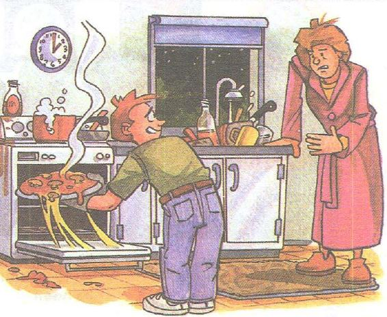

It's really cold. အရမ္းေအးတယ္

Steve: Hi, mom.
အေမ...
Mom: What are you doing, Steve?
စတၤီးဗ္ နင္ဘာလုပ္ေနတာလဲ
Steve: I'm cooking.
ကၽြန္ေနာ္ခ်က္ေနတာ
Mom: Why are you cooking now?
ဒီအခ်ိန္ နင္ဘာေတြ ခ်က္ေနတာလဲ
it's two o'clock in the morning.
မနက္ ၂ နာရီထိုးေနျပီ
Steve: Well, I'm really hungry.
ကၽြန္ေနာ္ တကယ္ ဗိုက္ဆာေနတာ
Mom: What are you making?
နင္ဘာ စားဖို႕လုပ္ေနတာလဲ
Steve: Pizza.
ပီဇာ။
Mom. Oh? What kind?
ဘာ ပီဇာ အမ်ိဳးစားလဲ
Steve: Cheese and Mushroom.
ဒိန္ခ်ည္နဲ႕ မႈိေလ
Mom: That's my favorite! Now I'm getting hungry. Let's eat.
အာ့ဒါ ငါ့အၾကိဳက္ဆံုးပဲ။ ဗုိက္ဆာလာျပီ။ စားၾကမယ္။